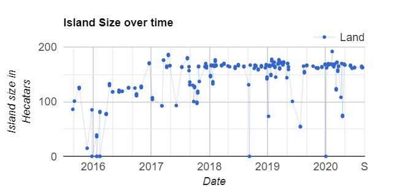
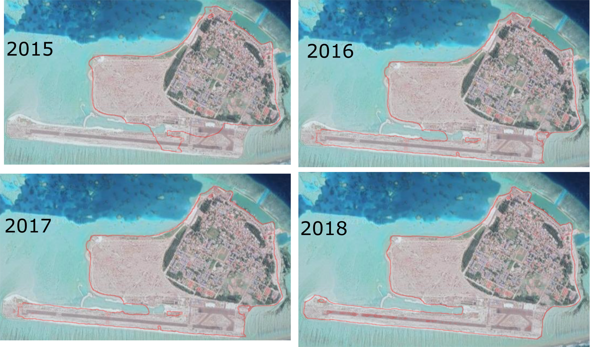
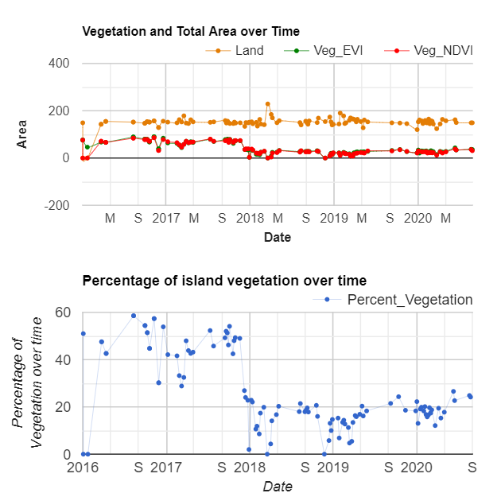

Island Health Explorer
Atoll Geomorphology Explorer
The following geomorphological parameters are currently availble to be explored through the apps :
- Island Area Explorer
(Plot and visualize area of individual inhabited islands, 2015-present) - Island Vegetation Explorer
(Plot and visualize the percentage of vegetation for each inhabited island, 2015-present) - Atoll Shoreline Explorer
(Visualize island shoreline contours for all islands on an atoll scale, 2015-present) - Atoll Annual Shoreline Explorer
(Visualize annual island shoreline contours 1999-present) - Atoll Clasified Features
(Visualize features of the atoll classified to different categories using Machine Leaning) - Atoll Clasified Features (Expanded)
(An additional 2 classes added to the Atoll Classified Features to further classify lagoon bottom type) - Atoll Bathymetry Explorer
(Explore the bathymetry of the Maldives.).
Example application - Changes to Coastlines and Vegetation
Introduction
Since 2010, industrial devolopment at an industrial scale has taken place across the islands, bringing a lot of anthropogenically driven changes to the islands. These include large scale land reclamation of isands as well as lagoons to make way for industrial activities. The vast majority of the islands today have modified coastlines. This change over a short period of time derives a lot of morphological changes, and it is crucial to study these changes to avoid "ufortunate" situations, which had occured such as large scale erosion. Here we explore three scenarios.
Changes to Coastline and Area in Kudahuvadhoo Island
Lets explore some of the changes to area over time across Kudahuvadhoo :Plotting the change in the temporal area over time shows that before major reclamation works prior to 2016, the island area was aproximately 80 Hectares. After the first phase of reclamation which occured between 2016 - 2017, the island land area increased to 120 Hectares. In 2020, after the area of the island stands at about 160 Hectares, nearly twice the size of the island two years ago!
So lets plot the shoreline contours from 2015 - 2018. Here "mean" means that we reduce all images for a given year to a single "mean" image. Becase of the changes brought in a small time frame, using the Atoll Shoreline Explorer / MSLP Explorer app, the app allowes the user to enter the specific date and time withour restriction.
Changes to Coastline and Area in Maafaru
Finally, lets plot the variation in vegetation over time across the island of Maafaru Island Vegetation Explorer app. An airport was devoloped on the island which had thick vegetation in 2018.
The contrasting drop in vegetation in 2018 due to the removal of the forested areas to make way for vegetation is striking. Initially, over 40% of the island was vegetated and the vegetation has now dropped to 20% of the total island area.